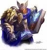

Guildes
Cercle des Paladins (le)
Dagona
Age : 24Sexe : Femme
Race : Humain
Faction : Alliance
Formation : Paladin
Plus d'infos sur Dagona >>>
Draco
Age : 38Sexe : Homme
Race : Humain
Faction : Alliance
Formation : Paladin
Plus d'infos sur Draco >>>
Estelia
Age : 26Sexe : Femme
Race : Humain
Faction : Alliance
Formation : Paladin
Plus d'infos sur Estelia >>>
Maya
Age : 10Sexe : Femme
Race : Humain
Faction : Alliance
Formation : Paladin
Plus d'infos sur Maya >>>
Méonidas
Age : 51Sexe : Homme
Race : Humain
Faction : Alliance
Formation : Paladin
Description :
 Méonidas Klrah est né au Kirin Tor, à 15 ans il commenca sa formation de Paladin Apprenti sous les ordres de Uther le Grand.
Méonidas Klrah est né au Kirin Tor, à 15 ans il commenca sa formation de Paladin Apprenti sous les ordres de Uther le Grand.
A 20 ans, Il devint Paladin Maitre et pu siéger au Conseil des Paladins.
Ce qui fit de lui un puissant Général.
Plus d'infos sur Méonidas >>>
Lire le récit de Méonidas >>>